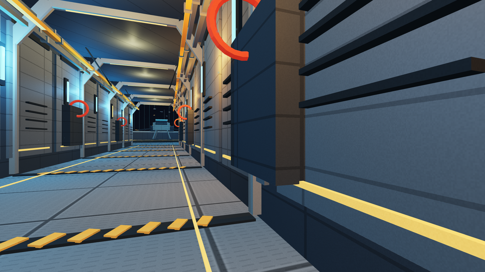

Przed / po — ta sama kamera
Pozycja [−2.35, 1.72, 27.5], cel [−13.5, 1.78, 61], pionowy FOV64°, seed15515657, czas12s.
Dotychczasowy korytarz
Stan bazowy z niezmienionego buildu7164bff.Iteracja 1 — kandydat do ocenyBrak drugiej iteracji bez wyraźnej zgody. Płynność i sprzętowe GPU pozostają BLOCKED.